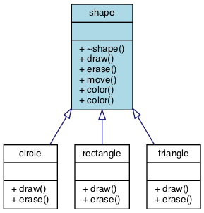

13.1. Object-oriented concepts¶
Object-oriented programming (OOP) is a programming paradigm based on the concept of objects, which are data structures that contain data, in the form of fields (or attributes) and code, in the form of procedures, (or functions, or methods). A distinguishing feature of objects is that an object’s procedures provide access to and modify its fields.
In object-oriented programming, computer programs are created out of objects that interact with one another. There is significant diversity in object-oriented programming, but most popular languages are class-based, meaning that objects are instances of classes, which typically also determines their type.
Object orientation is an outgrowth of procedural programming. Procedural programming is based upon the concept of the procedure call. Procedures, also known as functions, subroutines, or methods define the computational steps to be carried out.
Any given procedure might be called at any point during a program’s execution, including by other procedures or itself. Procedural programming is a list or set of instructions telling a computer what to do step by step and how to perform from the first code to the second code. Procedural programming languages include C, Fortran, Pascal, and BASIC.
The focus of procedural programming is to break down a programming task into a collection of variables, data structures, and functions. In object-oriented programming the primary effort involves breaking down a programming task into classes. Each class defines data that is commonly private. The private data is manipulated using the publicly available functions. The public functions define the class interface.
The most important distinction is that while procedural programming uses procedures to operate on data structures, object-oriented programming bundles the two together, so an object, which is an instance of a class, manipulates its own data.
13.1.1. Object-oriented programming principles¶
There are many views on the main features and motivations for object oriented programming [1] [2]. There are 4 principles that apply to most:
| Encapsulation: | Encapsulation refers to the creation of self-contained modules (classes) that bind processing functions to its data members. The data within each class is kept private. Each class defines rules for what is publicly visible and what modifications are allowed. |
|---|---|
| Inheritance: | Classes may be created in hierarchies, and inheritance lets the structure and methods in one class pass down the class hierarchy. By inheriting code, complex behaviors emerge through the reuse of code in a parent class. If a step is added at the bottom of a hierarchy, only the processing and data associated with that unique step must be added. Everything else above that step may be inherited. Reuse is considered a major advantage of object orientation. |
| Polymorphism: | Object oriented programming lets programmers create procedures for objects whose exact type is not known until runtime. For example, a screen cursor may change its shape from an arrow to a line depending on the program mode. The routine to move the cursor on screen in response to mouse movement can be written for “cursor”, and polymorphism lets the right version for the given shape be called. |
| Abstraction: | An abstraction denotes the essential characteristics of an object that distinguish it from all other kinds of objects and thus provide crisply defined conceptual boundaries, relative to the perspective of the viewer. Abstraction denotes a model, a view, or some other focused representation for an actual item. It’s the development of a software object to represent an object we can find in the real world. Encapsulation hides the details of that implementation. |
13.1.2. Encapsulation¶
Consider the following example:
#include <string>
// A class with no encapsulation
struct BadShipping {
int weight; // in pounds
int distance; // in miles
std::string address;
};
int main()
{
BadShipping bad;
bad.weight = -3; // Nothing prevents me from doing this
}
It’s clearly a bad idea to allow people to set the shipping weight to a negative value. In this case, we say our class has invariants: constraints on data that must be preserved for the class to remain valid. In this case, the shipping weight of items must be > 0.
How can you change this class to prevent problems like this from happening?
One solution is to make the weight private and write a method
that allows the class to set limits on weight.
Unfortunately, if we had already delivered our BadShipping code, then
as you make this ‘fix’, you break every class that currently uses it,
including those that already obey the class invariant.
It would have been much better to deliver code that could have been more easily
changed in the first place.
The ability to change your code without breaking every class that uses it is one of the key benefits of encapsulation. By limiting access and hiding the implementation details of your class to the maximum extent possible, you make it possible to change, fix, extend, or rework your class without requiring changes in any of the code that uses your class.
How do we ensure our code remains flexible and maintainable?
- Keep fields hidden using a private access modifier
- Make public accessor methods and force callers to use them by hiding your fields.
- Encourage programming to interfaces instead of implementation. More on this later.
Compare our first example with the following:
// A class with simple encapsulation
class BetterShipping {
public:
unsigned weight() { return weight_; }
void weight(int value) {
weight_ = value;
}
unsigned distance() { return distance_; }
std::string address() {
return address_;
}
// other mutators ommitted . . .
private:
unsigned weight_; // in pounds
unsigned distance_; // in miles
std::string address_;
};
You might be thinking “Hey! How is this any better than the first example?” We added methods to set and get the weight, but added no new capability. What have we gained?
We have gained quite a bit. Now we are free to change our minds about how weight values are set and retrieved. Even though we aren’t doing anything now, we are free to change the implementation later and no calling class will know.
Good OO design demands thinking about the future. Which brings us to our final example. No classes would need to be modified to add the new capability below.
#include <algorithm>
#include <string>
static constexpr int min_weight = 1;
class EvenBetterShipping {
public:
EvenBetterShipping() = default;
EvenBetterShipping(int w, int d, std::string a) :
weight_{std::max(min_weight, w)}, distance_{d}, address_{a}
{}
int weight() { return weight_; }
void weight(int value) {
weight_ = std::max(min_weight, value); // no upper limit on weight
}
int distance() { return distance_; }
std::string address() {
return address_;
}
private:
int weight_ = 2; // in pounds
int distance_ = 100; // in miles
std::string address_ = "My mom's house";
};
13.1.3. Inheritance¶
In C++, we can extend a class, adding data members or behavior in a new type. Consider the following example:
class enum Color {RED, ORANGE, YELLOW,
GREEN, BLUE, INDIGO, VIOLET,
WHITE, BLACK};
class shape {
Color color_ = Color::BLUE;
public:
virtual ~shape() = default;
virtual void draw() = 0;
virtual void erase() = 0;
virtual void move();
void color (Color new_color)
{
color_ = new_color;
}
Color color() const
{
return color_;
}
};
The class shape defines common behaviors that
can be shared among all classes.
The fundamental operations of translation across the plane
(move()), or assigning a color to a shape can have
common definitions.
Code that can only properly be implemented in the class that
properly ‘owns’ the behavior (draw and erase)
is implemented in the derived classes.
In the base class shape,
the virtual keyword instructs the compiler that the marked functions
can be overridden in derived classes.
The shape example illustrates different ways base class functions
may be implemented.
The color functions are not marked virtual.
These functions are inherited by all derived classes,
but cannot be overridden.
These functions represent a mandatory implementation.
In this design, every shape must have a color,
and it is changed using these functions.
The move function is marked virtual.
It can be overridden and the definition
of move is implemented in the cpp file associated with this
include file.
The functions draw and erase are marked virtual.
Note the = 0; at the end of the declaration.
This marks these functions as pure virtual.
A pure virtual function cannot be implemented in the
class that defines it.
Because a class the defines a pure virtual function cannot implement it,
that means any class containing a pure virtual function can never be
instantiated.
Given the shape class defined here, this code:
shape s;
will not compile.
A class containing at least one pure virtual function can only be used as a base class.
Derived classes declare their bases immediately after the derived class name. The general format is:
class derived_name: {access_modifier} base_name, {access_modifier} base2_name, . . .
A class may inherit from more than one base class.
class circle: public shape {
double radius = 1;
public:
void draw() const override;
void erase() override;
};
class rectangle: public shape {
double ht = 1;
double wd = 1;
public:
void draw() const override;
void erase() override;
};
class triangle: public shape {
double height = 1;
double base = 1;
public:
void draw() const override;
void erase() override;
};
In the derived class definitions,
we declare public members of the shape class
to also have public access the derived classes.
Compare:
class circle: public shape {}
class circle: shape {}
In the second case, the public members of shape
are treated as private members of class circle.
This is almost always a bug for new programmers
and a common source of error.
The keyword override tells the compiler that this function
intends to override a virtual function in a base class.
Although a C++11 feature and not required,
it is a best practice since it provides the compiler
more information about your intent and can flag functions
with incorrect signatures.
It is common to draw inheritance relationships like this:
This is different from extending classes through composition. More comparisons between inheritance and composition will be made in later sections.
13.1.4. Polymorphism¶
Polymorphism is often referred to as the third pillar of object-oriented programming, after encapsulation and inheritance. Polymorphism is a Greek word that means “many-shaped” and polymorphism itself comes in two distinct forms:
-
Base classes may define and implement abstract, or virtual methods, and derived classes can override them, which means they provide their own definition and implementation. At runtime, when client code calls the method, the type is resolved and invokes that override of the virtual method. Thus in your source code you can call a method on a base class, and cause a derived class’s version of the method to be executed.
At run time, objects of a derived class may be treated as objects of a base class in places such as method parameters and collections or arrays. When this occurs, the object’s declared type is no longer identical to its runtime type.
Note that a derived class may be treated as any type in its inheritance hierarchy. Also, it is perfectly valid for an overloaded method to be overridden.
-
Compile-time polymorphism is simply method overloading. Overloaded methods have the same method name but different number of arguments or different types of arguments or both.
13.1.5. Abstraction¶
One of the key advantages of object oriented languages over procedural languages is that objects act as metaphors for the real-world. In other words, objects model the real world. In a procedural language, tasks are executed in functions or procedures and the data that the functions operate on is stored elsewhere. A better way to manage the complexity of large programs is to keep the data in a program and the operations allowed on that data in a cohesive logical unit. A program describing a car might perform basic tasks: steer, speed up, slow down, but also needs to store information about the car: current speed, direction, cruise control setting, etc.
If you wrote your car driving program in a procedural language, you
would likely require different functions to control each of the car
behaviors.
You might create functions for turnCarOn(), turnCarOff(),
accelerate(), steer(), and others.
You would also need variables to store the current state of the car.
Although it’s perfectly valid to construct such a car in a procedural
language, these functions and variables we have created only exist as
a whole entity, a car in the mind of the programmer who created it.
The idea that individual units within a program each have a specific
role or responsibility is called cohesion and is difficult to
achieve in procedural programs.
For very large programs, which might contain hundreds or even thousands of entities, lack of cohesion can introduce errors, make programs more difficult to understand and maintain, and complicate the development of very large programs.
More to Explore
- TBD